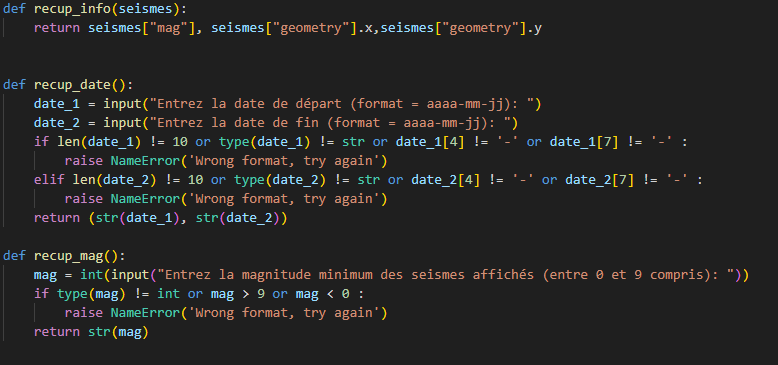
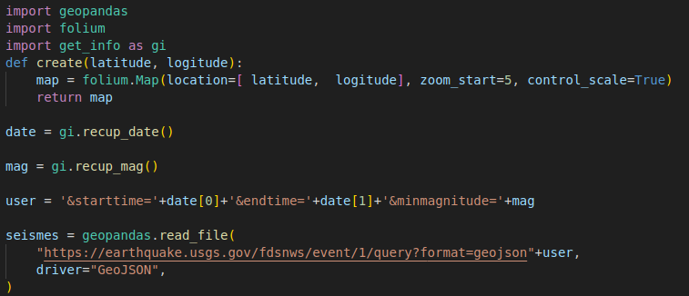
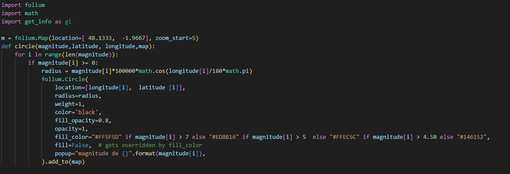

Tout d'abord, afin de créer notre carte sismique, nous avons besoin des informations concernant les paramètres voulus par l'utilisateur. Pour cela, nous avons créé deux fonctions, recup_date() et recup_mag() : elles ne prennent pas de paramètres et renvoient des inputs qui demandent plusieurs infos à l'utilisateur (date de début et de fin pour recup_date et magnitude minimum des séismes affichés pour recup_seisme). De plus, nous avons empêché à l'utilisateur d'écrire un message qui ne repond pas au format voulu afin de pouvoir faire une requête à l'API sans problème. Enfin, nous avons créé une fonction recup_info() qui prend en paramètre un 'séisme' (dictionnaire qui contient les différentes valeurs des séismes, leurs caractéristiques). Ses différentes fonctions seront utilisées dans les autres fichiers de notre code.

Par la suite, nous avons codé un moyen de créer notre carte sismique à partir des paramètres rentrés par le client. Tout d'abord, nous avons créé une fonction create() qui prend en paramètre les coordonnées auxquelles, nous voulons que la carte renvoie au départ et qui renvoie une carte créée à l'aide du module folium sur laquelle le client sera envoyé aux coordonnées rentrées zoomée fois 5 auquel on ajoute une échelle de taille. Enfin, afin de faire un appel à l'API, nous récupérons les paramètres du client en utilisant les fonctions présentées précedement grâce au fichier get_info.py importé sous forme de module. Ses paramètres sont donc ajoutés à l'appel dont on récupère le contenu (sous la forme d'un fichier geopandas) et enregistré dans la variable seisme.

Ce troisième fichier nous permet de dessiner des cercles correspondant aux séismes sur la carte folium à l'aide de la fonction circle(). En effet, cette fonction créée un cercle sur la carte pour chaque séisme récupéré grâce à l'appel à l'API selon différents paramètres :
- placés sur la carte selon la longitude et la latitude du séisme
- de rayon proportionnel à sa magnitude
- de couleur correspondant à un dégradé de couleur ayant un rapport avec la magnitude (entre vert = plus faible et rouge plus fort)
On ajoute aussi un texte quand l'utilisateur clique sur un séisme qui indique la magnitude de celui-ci.

Pour finir, nous exécutons tout le code expliqué précédement dans le fichier main.py dans l'ordre suivant :
- Lancement de la fonction create() du fichier map_creation.py avec comme paramètre des coordonnées proches de Rennes.
- Récuperation de la variable seismes du fichier map_creation.py qui contient les infos de l'appel de l'API.
- Récupération de la magnitude, de la latitude et de la longitude des séismes à l'aide de recup_info()
- création des cercles sur la carte à l'aide de circle()
- ajout d'un plugin folium permettant de mesurer des distances sur la carte
- sauvegarde de la carte sur le fichier map.HTML